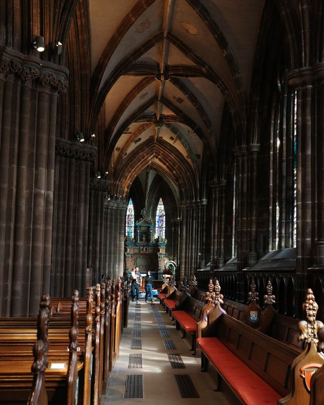

Everything you need for a semester in halls is within walking distance of campus.
Aldi on High Street is a short walk away, and the St Enoch Centre and Argyle Street have the rest. Get the loyalty apps on your first day: the lower price on many shelf labels is for members only.
Shops in Scotland have no Sunday trading limits (opens in a new tab), so big stores open on Sundays too. Prices below were checked in October 2026.
Supermarkets near campus
| Type | Place | Our note |
|---|---|---|
| Cheapest | Aldi | High St, a short walk from campus. The cheapest for basics. Aldi has no loyalty card. |
| Better range | Lidl | Duke St, a longer walk east than Aldi, and we preferred its range. Get the Lidl Plus (opens in a new tab) app for weekly coupons. |
| Everywhere | Tesco Express | Several in the centre. Prices with a Clubcard (opens in a new tab) are often lower than the shelf price. |
| Everywhere | Sainsbury's Local | Several in the centre. Nectar Prices (opens in a new tab) are lower prices on selected items for Nectar members. |
| Everywhere | Co-op | Membership (opens in a new tab) costs £1, and you get the £1 back on your first shop. |
| Toiletries | Savers | Brands such as Pantene, Dove and TRESemmé at low prices. |
| Budget basics | Poundland | Low-priced basics. |
Asian groceries
| Type | Place | Our note |
|---|---|---|
| Chinese supermarket | Chung Ying (opens in a new tab) | 254 Dobbie's Loan, near Glasgow Caledonian University. Pricier than the supermarkets, With sauces, noodles, rice and snacks familiar from home, we found the selection worth the higher prices. |
Meal deals
A main, a snack and a drink for one price. standard price, with the shop's loyalty card. Prices from Student Beans (opens in a new tab), 11 August 2026.
- Asda£3.74
- Sainsbury's£3.95
- Boots£3.99, or £3.60 with an Advantage Card
- Morrisons£4.00, or £3.75 with My Morrisons
- Co-op£4.10, or £3.75 with Co-op membership
- Tesco£4.25, or £3.85 with a Clubcard
- Tesco had the best quality of the ones we tried.
- Co-op: take the Ginsters Cornish pasty as your snack. It is as filling as a main.
- Boots in Buchanan Galleries also has a clearance shelf.
- Greggs gives a free sausage roll with a cold Sandwich Deal if you show Student Beans (opens in a new tab).
- M&S is the more expensive option.
Your first week in halls

| Type | Place | Our note |
|---|---|---|
| Kitchen and bedding | TJ Hughes (opens in a new tab) | Ground floor of the St Enoch Centre. Cookware, bed sheets, blankets and laundry baskets. Share an Uber back to halls; splitting the fare four ways kept the cost down. |
| Towels and basics | Primark (opens in a new tab) | 56–68 Argyle St. Cheap towels, bedding, clothes and shoes. |
| Free | Leftovers from the last residents | Halls usually have a pile or a market of things previous students left behind. Check it before you buy anything. |
Clothes and gear
| Type | Place | Our note |
|---|---|---|
| Thermals | Uniqlo (opens in a new tab) | St Enoch Centre, open since October 2025. We wore Extra Warm Heattech under our clothes through winter. |
| Cheap layers | Primark | Argyle St. Thermals, gloves, hats and scarves. |
| Hiking gear | Mountain Warehouse | Waterproof jackets and walking boots for the Highlands. |
| Second-hand | The Barras (opens in a new tab) | Weekend market in the East End, Saturdays and Sundays from 10am to 4pm. |
Saving money
- Too Good To Go
- Cafés, bakeries and supermarkets sell their unsold food at closing time in surprise bags, at half price or less (opens in a new tab). We used it to keep food costs down.
- Olio
- A free app (opens in a new tab) where neighbours and shops give away food and household items.
- Bags
- Every shop in Scotland charges at least 10p (opens in a new tab) for a carrier bag, so keep a tote bag with you.
- Pharmacy
- Boots and Superdrug both have several branches in the centre. Pharmacists can advise on minor illnesses without an appointment.